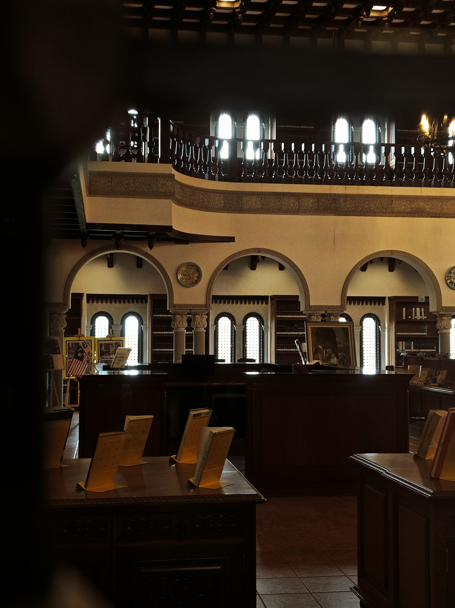

Our Services
Comprehensive support at every stage of education.
We provide each student with a unified strategy tailored to their mind, goals, and timeline. This integrated, holistic approach makes certain that every aspect of your child’s support is aligned to their needs.
How we work
A bond, not a package.
Your child’s support is led by a senior mentor and bolstered by a team of committed specialists. Together, they’ll provide long-term care and inspiration that is rooted in the kind of deep understanding and trust that only springs from time and dedication.
Our support is designed to grow with the student, from early help, to deeper academic engagement, to admissions, to whatever comes next. Most families continue working with us for several years.

What we offer
Admission Strategy
Long-term support and profile-building, from sharpening academic interests to developing a compelling extracurricular mix to coaching essays that are effective and authentic. We support your child’s story and sense of self, not just their application. Explore the Admissions path →
Learning Differences Support
Support built around how bright, complicated kids already learn, carefully coordinated with schools and clinicians. Explore the Learning Differences path →
Academic Tutoring
Deep one-on-one coaching that focuses on developing metacognition, intellectual confidence, and mastery of challenging material. We aim not to remediate, but to optimize potential. Explore Academic Tutoring →
Executive Functioning
Personalized systems for planning, prioritization, time management, and self-regulation, embedded within academic work rather than treated as a separate concern. Explore Executive Functioning →
Test Preparation
Strategic test prep tailored to how your child thinks and performs. Each student’s plan is customized in response to their error pattern. Session formats are flexible, including a short high-frequency model to reduce burnout and build confidence. SAT, ACT, SSAT, ISEE, and AP. Explore Test Preparation →
Educational Planning
Multi-year strategic plans that align academic choices, extracurriculars, and personal development toward your child’s long-term goals. Designed to help you see the bigger picture and make decisions confidently. Explore Educational Planning →
Family Consulting
Education is a family journey. We work closely with parents to align on strategy, navigate school dynamics, and foster supportive home environments that complement our work with students. Explore Family Consulting →
The Aristotle Program
Bespoke, multi-year mentorship rooted in the Oxford tutorial tradition. Form a bond with a single mentor over a period of years, with an educational system shaped around the whole child and your family’s own values. Explore the Aristotle Program →